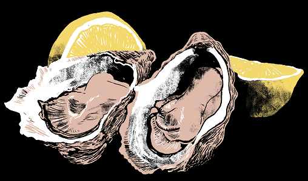

Extradition Order’s Poet of the Appetites: a life of MFK Fisher is the concluding part of Extradition Order’s ‘American Century’ trilogy, this record tells of the lives and loves of MFK Fisher. Pioneering, fearless, arrogant and sexual, Mary Frances Kennedy Fisher is the best, the absolute best.
John Updike declared her the “poet of the appetites” – WH Auden thought her the greatest prose writer in America.
In January 2020, Extradition Order sold out the Lexington to launch their album American Prometheus, the story of nuclear physicist J Robert Oppenheimer which followed their Kennedy album, first of the trilogy. Receiving 6Music plays and great reviews, they had plans for more shows, a tour, a handful of singles to promote through the year. Instead, they were told to stay indoors. So they did, and having produced a lockdown ep (You’re on Mute), they demoed and developed this record at first in lockdown and then recorded in 2022.
Fisher appealed to the band first and foremost for her clean, precise prose (as a lyric on the record says: “She poses as a housewife, but writes like a surgeon”). But they were also attracted to MFK Fisher’s life of appetite and desire, presenting another side to the ‘American Century’ triangle than politics or science: what it means to take what you want, and not to settle for what you get.
Produced by Ian Button (ex-Thrashing Doves, Death in Vegas), led by brass and strings, the keys of Matt Bergin, and unisex lead vocals from Alastair Harper, Anoushka Kenley, Radhika Aggarwal and Rosie Beard, this album is the first they have done since the death of former bassist Nick Boardman. It presents a new musical vision for Extradition Order, tasting pet nat on a Copenhagen square as the music forms – Fleetwood Mac with more free jazz and shredding. Crisp as a table cloth, clear and direct – this record attempts to sound as unique and compelling as Fisher’s writing.
